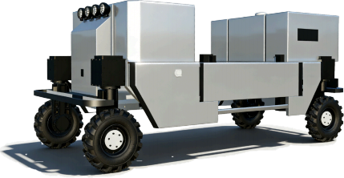

让农田作业
走向无人化
Towards unmanned
field operations
移植汽车行业电动化、智能化技术，深耕农田自动驾驶与机器视觉，以模块化平台实现一机多用，赋能世界农业。
We bring automotive electrification, autonomy and machine vision to farming — one modular platform, many operations.

WB-300两大通用型农业机器人平台Two Universal Agricultural Robot Platforms
平台化设计，标准化接口，适配多种农田规格与上装作业模块。
Standardized interfaces adapt the platform to diverse fields and implements.

全栈自研，平台化重构农田作业Full-stack, in-house technology for platform-based farming.
模块化一机多用One Machine, Many Uses
标准化接口搭载除草、喷洒、打顶、间苗、监测、采收、运输等模块。
Standardized interfaces support weeding, spraying, topping, thinning, monitoring, harvesting and transport modules.
四轮八驱极致越野4-Wheel 8-Drive Off-road
四轮扭矩转向独立可调，高集成角模块，轮端扭矩高达 1200 N·m × 4。
Independent torque steering per wheel, integrated corner modules, and up to 1200 N·m × 4 at the wheel.
全栈自研中央域控In-house Central Domain Control
IPU 智能控制单元 + ZCU 区域控制器，开放式电子架构，高算力 AI 大脑。
An IPU control unit and ZCU zone controllers on an open, high-compute architecture.
视觉无人驾驶Vision-based Autonomy
基于视觉的现场无人化作业，极大提高人效，降低劳动力需求。
Vision-based autonomy boosts efficiency and cuts labor demand.
首发应用：激光除草机器人First Application: Laser Weeding Robot
行业龙头联合研发，无人驾驶 + 无人作业，覆盖 90% 以上农田场景。
Co-developed with industry leaders for unmanned driving and operation, covering over 90% of field scenarios.
全天时作业24/7 Operation
7×24 小时全天时作业，稳定高效。
24/7, all-weather operation.
绿色零污染Green, Zero Pollution
绿色除草，土地 0 污染。
Green weeding with zero soil pollution.
灵活动力配置Flexible Power
纯电 / 增程灵活动力配置，适配不同场景。
Pure-electric or range-extender power.
高效替代人工Replaces Manual Labor
作业效率高，可替代 10~20 名人工。
High efficiency, replacing 10–20 workers.
全场景覆盖Broad Coverage
覆盖 90% 以上农田场景。
Covers more than 90% of field scenarios.
无人驾驶Unmanned Driving
无人驾驶 + 无人作业一体化。
Integrated unmanned driving and operation.
携手轮上，共建无人农场Partner with WHEELBOTS
从通用平台到定制化上装，我们与生态伙伴共同推进农业无人化作业。
From platforms to customized implements, we advance unmanned farming with our partners.